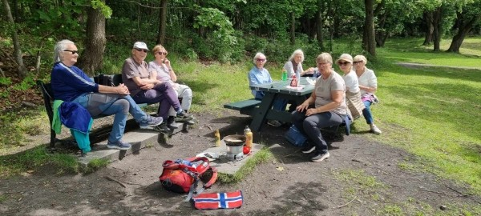
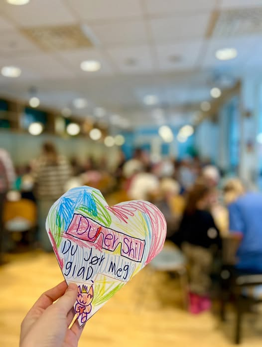

Blogg
Blogg
Våre aktiviteter
Hva har du lyst til å være med på?
Kom som gjest, eller bli med i frivillig-gjengen.
Du er velkommen uansett!

Møteplass Vinderen Kafé
Nydelig mat med høyt servicenivå!

Frivilligbussen
Gratis transport med høyt servicenivå!

Språkkafé
Bli bedre i norsk og bli kjent med andre samtidig.

Leksehjelp
Et trygt sted å få hjelp til skolearbeidet.

Hjelpemidler
Vi kan hjelpe deg å hente og montere hjelpemidler.

Legetransport
Vi kan hjelpe deg til lege eller andre aktiviteter.

Frivilligbiblioteket
Byens koseligste bibliotek

Hente medisiner
Det er ikke alltid lett å komme seg på apoteket når man trenger medisiner. Det kan vi hjelpe deg med.

Medvind
Alle har rett til vind i håret

Teknisk etat
En skapdør som har falt ned eller et lysrør som må byttes?

Hobbykafé
Hygge, kaffe og håndarbeid

Trygg handletur
Vi blir med deg på butikken og hjelper deg med varene.

På nett - sammen
Hjelp til telefon, TV, nettbrett, smarttelefon og PC

Søndagsmiddag
Månedens høydepunkt - 3 rettes middag med hyggelige folk.

Petanque
Et sosialt og lett tilgjengelig spill for alle

Sangglede
Åpen og uformell sangstund

Turgruppen
Turer og fellesskap i skog og mark

Samvær på Vinderenhjemmet
Frivillighet gir livsglede!